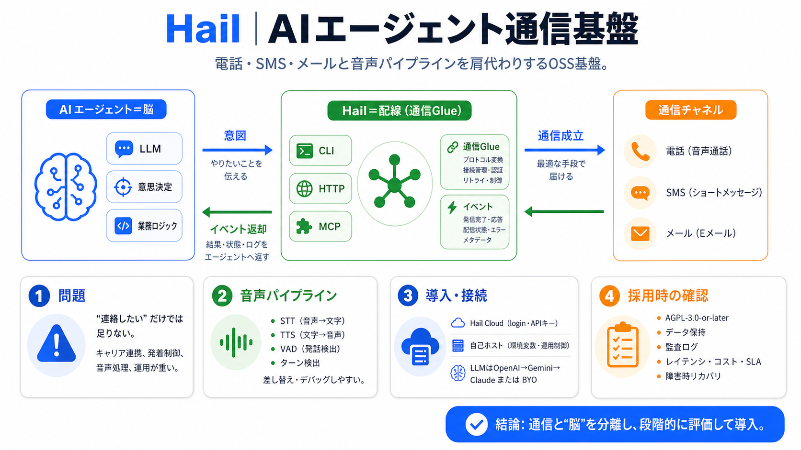

hail/dev-docs/development-process.md at main
Before you can write code, there are some setup steps that will allow you to develop effectively. Hail currently support…

Before you can write code, there are some setup steps that will allow you to develop effectively. Hail currently support…
This patch version implements necessary changes for working with Variant Datasets with haploid calls. The substantial ba…
Hail is an open-source, general-purpose, Python-based data analysis tool with additional data types and methods for work…
The Hail source code is hosted on GitHub: Hail uses pre-compiled native libraries that are compatible with recent Mac OS…
Hail is an amazing open source library and platform for genomic data analysis, Hail (query) is a python framework for ma…